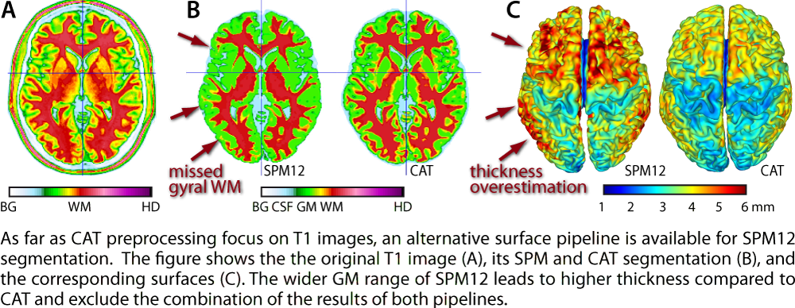
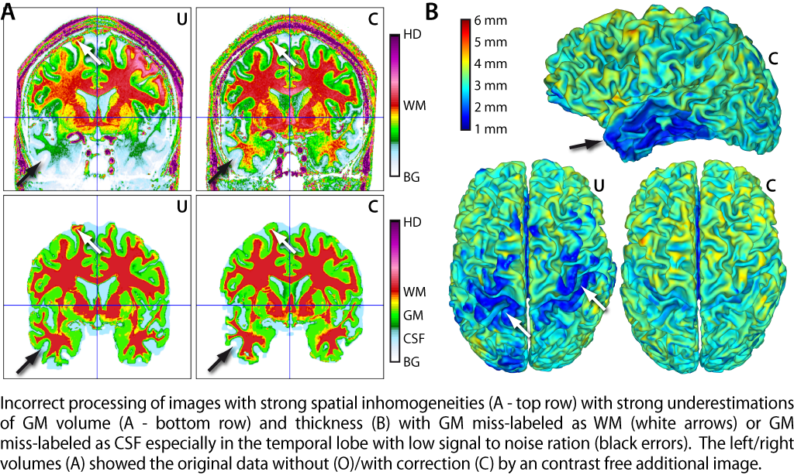

FAQ
Segmentation
- Do I need further noise or bias corrections?
- The normalized images have striped artifacts.
- The segmentation or surface reconstruction looks totally wrong.
- Parts of the brain are missing, or a wider brain mask is required.
- Parts of the head (but not meninges/blood vessels) are within the brain mask, or closer brain mask is required.
- Thin brain structures (e.g. in the cerebellum) are missing.
- There are too many meninges (but not high intensity blood vessels).
- There are blood vessels in the tissue segmentation that were classified as WM.
- I got file writing errors (under Windows).
- The parallel processing failed and CAT just open empty preprocessing files or these files include multiple different strange errors ...
Surface reconstruction and thickness estimation
- Is it possible to use the SPM segmentation for ROI processing or thickness estimation and surface reconstruction?
- Blurred sulci
- Blurred and broken gyri
- Is there a thickness map that allows a voxel-based analysis?
- Known problems in ultra high-field data (7 Tesla)
- Preprocessing of T2/PD data
- Preprocessing of specific contrasts (e.g. MT, T1syn, R1)
Quality control
Segmentation
-
Do I need further noise or bias corrections?
No, in general we recommend to use the original images without any preprocessing. Low frequency corrections for inhomogeneity, e.g. the N3 algorithm, are unproblematic but not required for most datasets. Only for very strong inhomogeneities (ICR lower than 50, grade E or F) of high-field scanners (greater 3 Tesla) further preprocessing might be helpful if CAT12 shows any problems. Try to avoid high frequency corrections or resampling of the data because this will reduce the ability of the noise filters. For images with slice-artifacts try the Slice scaling correction tool.
-
The segmentation or surface reconstruction looks totally wrong.
Check orientation and visual image quality of the affected images. The full brain and the major tissue classes should be identifiable. If the surface looks bad, check if this depends on the segmentation.
-
The normalized images have striped artifacts.
This depend on the input resolution of our files and will be largely diminished after smoothing. Usually, the internal interpolation ensures isotropic voxel size and a minimum spatial resolution and tries to prevent this kind of artifacts.
-
Parts of the brain are missing, or a wider brain mask is required.
Decrease the Strength of gcut+ Skull-Stripping = gcutstr parameter.
-
Parts of the head (but not meninges/blood vessels) are within the brain mask, or closer brain mask is required.
Increase the gcutstr parameter.
-
Thin brain structures (e.g. in the cerebellum) are missing.
Decrease the cleanupstr parameter.
-
There are too many meninges (but not high intensity blood vessels).
Increase the cleanupstr parameter.
-
There are blood vessels in the tissue segmentation that were classified as WM.
Correction of blood vessels with similar intensity like the WM is always problematic. Nevertheless, you can try to increase the BVCstr parameter.
-
I got file writing errors (under Windows).
E.g. "Error: Permission denied. There was a problem writing to the header of ..."
We are working on this topic. Try to use simpler paths and filenames without special characters.
-
The parallel processing failed and CAT just opened empty preprocessing files or these files include multiple different strange errors ...
You work too long with MATLAB and it may open too many files that were not closed correctly (e.g. by killing read/write routines). You have to restart your SYSTEM and not only MATLAB. Until now, this error only occurs in developer mode.
Surface reconstruction and thickness estimation
-
Is it possible to use the SPM segmentation for ROI processing or thickness estimation and surface reconstruction?
SPM segmentation based pipeline CAT12: SPM Segmentation is available in expert mode that also implements DARTEL registration. It requires the processed GM, WM, and, CSF tissue maps in native space, the original image, and the SPM seg8.mat file and was designed to use the original SPM segmentation without further optimization to allow processing of T2/PD images or multimodal segmentation. A full batch script with SANLM filter is available here. The results cannot be mixed with results of the default CAT pipeline because SPM12 segmentation no PVE and can be biased by the TPM. In general, cortical thickness values are slightly larger and thin gyri such as the parahippocampal or temporal gyri show more interruptions (see figure).

-
Blurred sulci
The blurring of sulci (or incorrect reconstruction) depends on the spatial resolution (more blurring for lower resolutions), the contrast (more blurring for lower GM/WM contrast), the age of the subject (more blurring for younger subjects), and finally the image quality (more blurring for lower quality). It often occurrs in occipital regions due to higher myelinization and decreased GM/WM contrast. In this case, the problems depend more on the tissue segmentation (at most LAS) and less on the surface reconstruction (PBT). In case of WM hyperintensities the internal correction can fill gyri (otherwise gyri often broke over large areas).
-
Blurred and broken gyri
Similar to the sulci also gyri especially their crones can be blurred. Besides low spatial resolution (more blurring) and image quality, especially the age plays an important role. In very young subjects the WM is often not clearly visible and leads to very thick cortex and in poor cases to broken gyri. But also in very old subject problems can occur by strong WM atrophy and WM hyperintensities (see WMHC).
-
Is there a thickness map that allows a voxel-based analysis?
No. Although the PBT approach creates such a map, it is only used for mapping thickness to the surface and for ROI analysis. A voxel-based analysis of such a map might be not meaningful because the standard statistical processing is not optimized for this type of data. Simple Gaussian smoothing is not recommended (it will alter the values) and the varying width of the GM ribbon (thick areas will have more representatives than thin areas) are not considered. Therefore, the analysis of cortical thickness is only available for the surface-based analysis.
-
Known problems in ultra high-field data (7 Tesla)
Images on ultra high-field scanners often have strong inhomogeneities with large intensity changes and highly increased spatial frequency compared to 3 Tesla. The intensity changes influence the processing quality whereas low signal areas are extremely noisy and often lead to problems with CSF/GM segmentation with GM underestimation (see next figure A); But the more serious problem is given by the spatial frequency that reduces the ability of the tissue classification that is required for bias correction. Without further corrections, e.g. by division by contrast free images with the same bias, problems based on insufficient cranial bias correction with GM misclassification as WM are typical that lead to local thickness underestimations (see next figure B). We recommend to increase the "biasstr" parameter to 0.8 or 1.0 to use a smaller biasfwhm and less regularisation.

-
Preprocessing of T2/PD data
Although, CAT focuses on T1 data processing (with CSF<GM<WM intensity), there is also the possibility to process T2/PD data (with WM<GM<CSF intensity or GM<WM<CSF). Typically, T2/PD data have lower CNR and lower resolution resulting in low quality ratings (IQR) and poor segmentation accuracy (see also Validation).
In particular, in case of GM<WM<=CSF intensity the correct classification of sulcal CSF is problematic because of the
a-priory AMAP segmentation and the partial volume effect (PVE). CAT uses a specific region growing process to differentiate between CSF and WM voxels but this process is relative error-prone in that case. The following figure shows the segmentation and surface reconstruction of a T2 TSE scan of a neonate that shows classification problems of sulcal CSF in the SPM but not the CAT segmentation. For this preprocessing the standard TPM was used because the available TPMs (e.g. MANTIS TB) does not fit to the 6 class SPM12 standard TPM. Moreover, it was necessary to reduce the strength of the SPM inhomogeneity correction (biasstr = 0.1) to avoid false corrections. -
Preprocessing of specific contrasts (e.g. MT, T1syn, R1)
Synthetical contrast such as MT, T1sys, or R1 often have only a very light bias. Although, we found the default biasstr value work very well in our test cases, it is possible to reduce the amount of bias-correction to a low non-zero value (e.g. biasstr = eps to 0.2).
Quality control
-
Some of my images get a low rating - can I use them anyway?
Outliers of image quality are often caused by artifacts e.g. by movements. Increased noise is also possible for elderly subjects with WMHs, where the fibers become visible and increase local variance.
Best praxis is to remove strong outliers (e.g. > 2 standard deviations, but not necessarily), if the problems depend on the image quality and not other subject properties. If you have only a small number of images, you can also evaluate the segmentations in subject space by checking the cat12*report.ps or by using the Display slices tool. Use the Check data homogeneity to proof that the segmentation of these subjects were correct. In the plot outliers from the sample are usually isolated from the majority of images which are clustered around the sample mean. However, this will not always mean that you have to remove these data from your sample, but should be checked more carefully.
Have a look to the quality control methods for further information. -
My whole data get a low average rating - can I use it?
Yes, but you have to check for any preprocessing problems. Low rating depends on low resolution and/or higher noise/artifacts and is typical for very short sequences that are required e.g. for children. Increased noise is also possible for elderly subjects with WMHs, where the fibers become visible and increase local variance. Overall segmentation and reconstruction quality will be lower than for high quality data (Kappa < 0.9) and you have to check if the cortex was segmented correctly.
Use the Check data homogeneity and/or have a look to the segmentations in subject space by checking the cat12*report.ps or by using the Display slices tool. -
Unexpected thickness values
Check segmentation (check report file)...